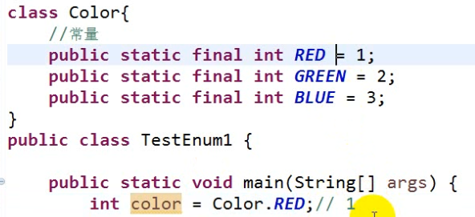

枚举类型：枚举类型说白了就是一个类
枚举类最大的特点是这个类中对象的数目是固定的, 不能随意新建对象
在没有枚举类之前, 使某个东西有固定数量通常是通过常量来实现, 比如,想定义三原色, 就得如下定义:
这样的问题所在就是看到这个常量很难和真正的颜色联系到一起, 也不太符合对象的思想, 也造成了类型不安全。

于是就产生了枚举类。
枚举类的定义方式:
enum 枚举类名{
枚举类的对象；(注意一定要在枚举类定义的第一行代码给出,不能有任何代码写在它之前,对象与对象之间用逗号分隔)
属性；
方法；
构造器；
抽象方法；
重写；
实现接口中的方法
}
注意：
1.枚举类 已经隐式继承了java.lang.Enum类, 所以它不能再显式继承其他类了(因为java是单继承的)；
2.枚举类的所有对象 必须在枚举类的第一行代码处显示列举出来；
3.枚举类对象的默认(隐式)都是 public static final;
4.枚举类的构造器默认(隐式)都是 private (因为枚举类的对象数量是固定的,不允许别的类再用枚举类的构造器新建(new)对象。并且, 枚举类里也不允许用"new+构造器"的方式在枚举类里新建对象);
5.普通的枚举类通常都是 final修饰的; (也就是说普通的枚举类不允许被继承。当然也有抽象的枚举类,抽象的枚举类当然可以被继承)
6.当枚举类里定义了抽象方法, 并且由枚举类的对象用匿名内部子类的方式重写实现了所有的抽象方法，那么这个枚举类 就是 abstract的。
7.枚举类里定义的属性、方法之类的内容, 仍然是属于第一行定义的对象拥有的东西, 如果不是静态内容,还是要通过"对象.属性或方法"的形式来调用。
所以上面例子中的三原色类就可以定义成枚举类, 然后使里面只有三个对象, 使用枚举类会比用上面用常量的形式更方便, 更形象。如下:

先来研究一下编译后的Color类是什么样子, 将其反编译一下如下:

从上图可以发现有两个默认方法Color[] values()和Color valueOf(String)。 values()方法是用来获得所有的枚举对象的, valueOf()方法可以把一个字符串转换为一个枚举类型的对象。
如果想看Color类构造器, 就需要在javap 的后面加一个参数 -private了, 因为枚举类的构造器就默认是private的。一般的类的构造器就不用加参数-private看了

可以看到构造器是private Color(String, int); 参数String是枚举对象的名称(如这里的"RED"), int是枚举对象的序号(序号是根据声明定义枚举对象的顺序来依次分配编号的, 编号从0开始)
------------------------------------------------------------------------------------------------------------------------------------------------
枚举类型的使用举例:
可以用如下方法来的得到枚举类型的名称和序号:

结果如下

switch是支持枚举类型的, 还是用上面的枚举类, 在main方法里写上如下内容, 如下:

结果如下:

定义属性:
用枚举类型来创建属性, 注意, 如果不是静态的属性, 那么它是归对象所有, 而枚举类只有固定的对象, 所以只能用枚举类里现有的对象来使用这些属性。
注意属性的调用方式, 说明这些属性还是输入对象的一部分的

当属性是private的时候, 就不能在别的类中直接用对象调用了,而是要用访问器:


定义构造器:
当枚举类显式的定义了一个构造器时, 这个构造器不是来给该枚举类创建新对象使用的(因为显式定义的构造器还是private的), 而是给当前已有的枚举对象实现某些功能的,比如说给某些属性复制。当显式的定义了构造器后, 原来隐式的无参构造就失效了(当然别的普通的类也是这样)。所以此时,所有枚举对象都要按构造器的形式进行传参。如下:
需要注意的是枚举类只能显式定义一个构造器。如果能定义多个构造器那么传参的个数就无法确定了。

需要注意: 因为枚举类的对象数量是固定的,所以不允许别的类再用构造器新建(new)对象。并且, 当前的枚举类里也不允许用new+构造器的方式在枚举类里新建对象, 举例如下:

定义成员方法:
枚举类也可以定义成员方法并调用, 将下面的show方法加入到上图中的Color类中, 并在测试类里调用, 如下图:

重写:
如果是重写Enum类的方法, 那么该类可以重写的方法只有一个, 如下:

于是在前面的Color类的基础上加上重写后的toString()方法, 并在测试类里调用该方法, 如下

定义抽象方法:
抽象类里可以定义抽象方法, 为何枚举类是final修饰的也可以定义抽象方法?
枚举类里支持定义抽象方法是必须在枚举类里用匿名内部子类的方式将该抽象方法重写实现。
而一般的创建匿名内部子类的形式是:
new 父类名(){
}
但因为匿名内部子类既然是枚举类的子类, 就还是个枚举类, 也就意味着还是不能用new的方式来创建对象(即使是创建匿名内部子类), 所以用new这种方式是行不通的, 但是"类名 对象名 = new 类名() "就等价于"某个具体的枚举对象", 放到Color枚举类这个例子里,RED(11,"红色")就是Color枚举类的"某个具体对象", 也就是说"Color RED = new Color(11, "红色")"等价于" RED(11,"红色") " , , 所以创建匿名内部子类对象的方式同理, 直接用
RED(11,"红色"){
实现抽象方法;
}
来创建匿名内部子类, 等价于
Color RED = new Color(11, "红色"){
实现抽象方法;
}
需要注意的是: 如果某个枚举类里定义了抽象方法, 那么该枚举类的所有对象都需要用匿名内部子类的方式重写实现该抽象方法。
举例如下:


此时再反编译Color类的class文件, 发现该枚举类变成了一个抽象类:
因为只有抽象类里才能有抽象方法, 所以必须把该枚举类改为抽象类。

如果枚举类实现了某个接口, 那么接口里的抽象方法,在枚举类里还是必须通过匿名内部子类的方式来重写实现这些抽象方法(否则会报错),如下面红框。但于此同时, 它还可以在定义成员方法的地方再重写一遍该方法(不是在枚举类的对象里面), 如下图蓝框, 但蓝框处的重写不是必须的, 原因是因为只要实现了带有抽象方法的接口, 枚举类就会变成abstract的(就和上面的在枚举类里定义一个抽象方法时的处理原理一样), 所以它可以容忍抽象方法的存在, 不一定要在类里的成员变量处重写接口的抽象方法, 但它必须将该抽象方法用匿名内部子类对象的形式实现, 作为枚举类的对象, 以确保抽象方法都至少会有一个具体的实现, 而已经在匿名内部子类处有了一个具体的重写实现, 所以在成员方法处重写抽象方法就不是必要的了, 因为此时的枚举类本来就是抽象的。

------------------------------------------------------------------------------------------------------------------------------------------------
枚举使用举例:

代码如下: